多媒體系統設計團體遊戲企劃案 回首頁
組員:
設計組 : 1411222012 陳品錞(組長) 、 1411222008 吳宜蓁 、 1411222050 黃銘紳
程式組 : 1411222047 賴俊宇 、 1411222055 李進光 、 1411107040 黎姵妘
指導老師 : 陳賢錫、徐豐明
發想 故事大綱 遊戲介紹 遊戲玩法 流程 角色設計 關卡 陷阱 工作分配 海報 預告片
我們以2050年作為背景，描繪一個地球瀕臨崩壞的未來。面對怪物入侵危機，勇者被迫踏上尋找新家園的旅途。
希望能透過這款跳躍型遊戲，讓玩家在操作角色向上躍升、躲避陷阱、挑戰高分的過程中，感受到探索未知的勇氣。
隨著主角跳上魔豆、穿越宇宙，最終抵達一顆適合居住的超級星球，也象徵著人類在絕望中仍不放棄希望的精神。
在2050年，世界面臨著一個末日危機，為了生存下去，一位勇敢的冒險者踏上了一段跳躍之旅，
前往宇宙探索新生存地。他跳過森林、跳上天空、跳上宇宙，直到找到新的生存地，
一路向上跳躍著，途中暗藏著寶藏與危機，向上探索著未知的旅程，最終他找到了適合繼續生存的超級星球。
玩家操控勇者角色，控制角色向上跳躍，被怪物擊中必須重新向上(角色被擊中墜落時，仍然可以控制角色)。
躲避陷阱，並挑戰自己能跳得多高，分數依照時間計算，挑戰自己的最高紀錄。
↓開始遊戲介面 ↓遊玩教學 (點按跳過)
遊戲開始介面 : 以簡單的方式呈現開始遊戲與歷史紀錄。
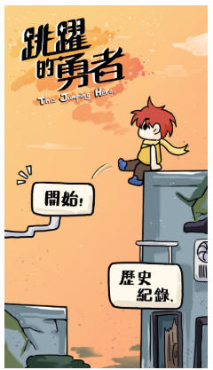 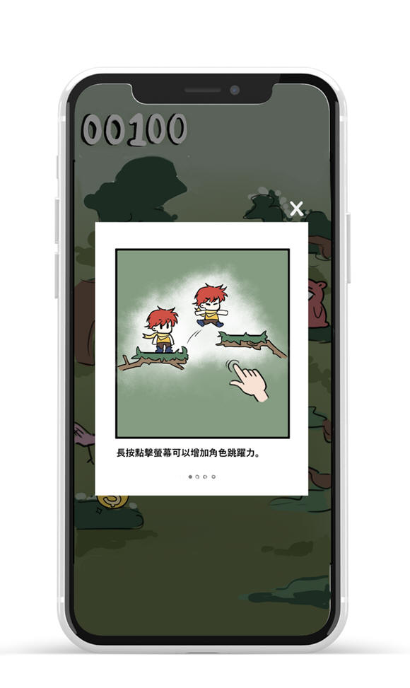
↓遊玩基本設定
主要有時間、暫停鍵，暫停鍵後有回主頁面跟繼續，畫面簡潔為主。
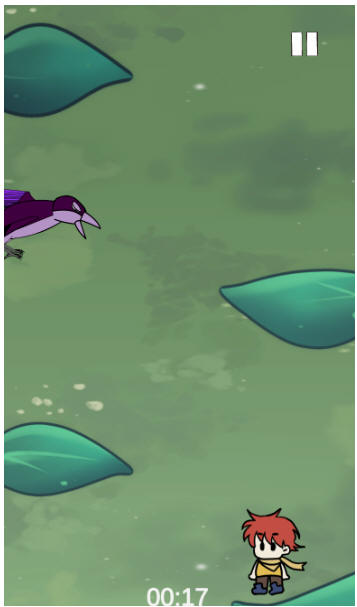 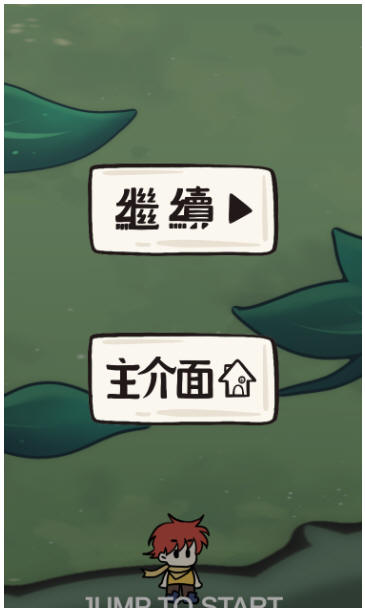
↓遊戲教學
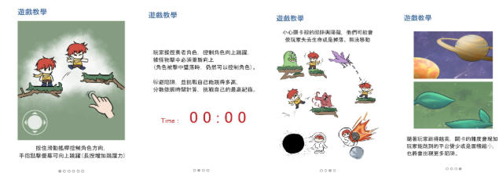
↓最終分數計算
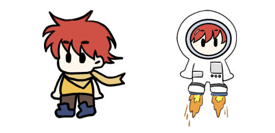
勇者(冒險者)，分別在魔豆關、宇宙關分別有不一樣的服裝。
分為魔豆、宇宙，隨著跳得越高，關卡的難度會增加，能跳到的平台更少或移動平台越快，出現更多陷阱和障礙。
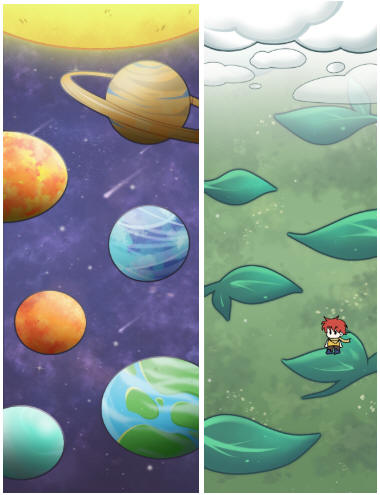
開場動畫
主角在尋求生存途中發掘了神奇魔豆，並在森林中下了它，出乎意外的，這棵魔豆迅速成長，成了他向上探險的道路。
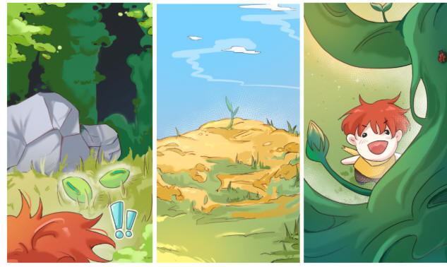
過場動畫：
勇者搭乘火箭，意外墜落後，到達了宇宙。
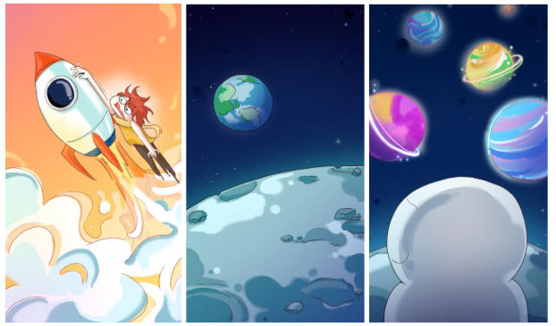
結束動畫 :
最終他找到了適合居住的超級星球，新的生存地。
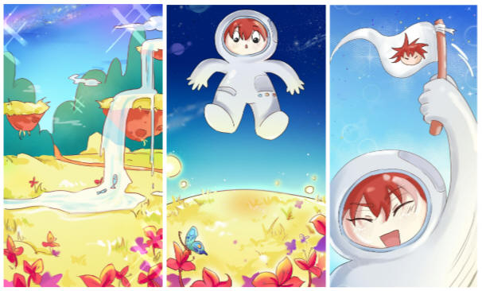
魔豆關卡
史萊姆 : 觸碰到史萊姆黏液會暫時無法行動。
飛鳥 : 飛鳥會遠程攻擊主角，扣遊玩積分。
熊怪 : 熊怪會使出熊掌攻擊，主角會飛出去，掉落到下方。
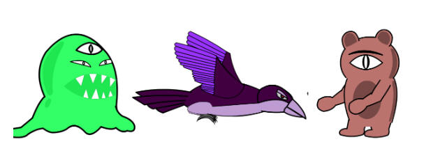
宇宙關卡
黑洞:會被隨機傳送到不同的地方。
外星人攻擊:會被外星人飛船載到下面的地方。
隕石:被隕石打到會飛出去並墜落。
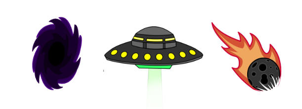
設計組
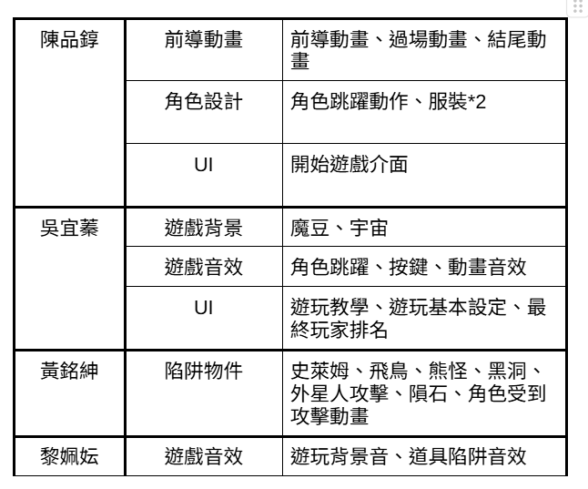
程式組
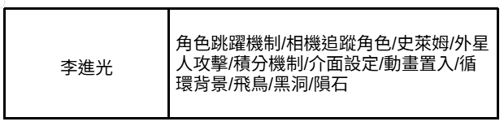

一分鐘 : https://youtu.be/k1yK4XVDf2A
三分鐘 : https://youtu.be/P1AgyJW8aHA?si=tkr8FWUvdpBuY2et